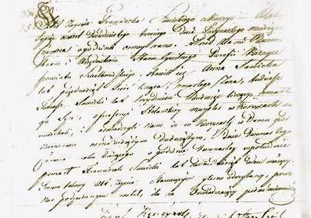
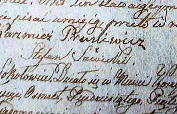

Od Niecieckiego do Sawickiego
Najstarszymi naszymi przodkami ustalonymi z imienia i
nazwiska, bądź z samego imienia, byli: Paweł Nieciecki,
Agnieszka Grudnicka Woyciech Wytyszkiewicz i Dorota. Paweł
Nieciecki i Agnieszka Grudnicka to rodzice Franciszki, a
Dorota i Woyciech Wytyszkiewicz to rodzice Teresy.
Teresa Wytyszkiewiczówna zaś poszła za Józefa
Sieczkowskiego, z którym miała Teklę. Tekla związała
się z Augustynem Sieczkowskim (historia naszego rodu
zapętliła się zatem), a ich córka Marianna Katarzyna
została żoną Stefana Ludwika Sawickiego. I to
ich syn,
Tomasz Antoni Sawicki dał początek Sawickim z
Bejsc.
Aby zrozumieć te wczesne powiązania rodzinne,
dobrze
zajrzeć tu.
Najstarszym naszym przodkiem z linii Sawickich, znanym
z przybliżonej daty daty urodzenia i statusu społecznego
był
Franciszek Sawicki, mieszczanin koszycki, urodzony
około 1752 roku. Jego żoną była
Anna z Sieczkowskich
(młodsza od niego o piętnaście lat). Mieli czwórkę
dzieci: Magdalenę, Teklę i Katarzynę, oraz syna Tomasza.
Franciszek był niepiśmienny, zmarł 12 czerwca 1823 roku
w Koszycach w domu numer 89.
Poświadcza to najstarszy dokument dotyczący naszej
rodziny, do jakiego udało się dotrzeć - przekonuje
Bartłomiej Czech, jeden z potomków
rodziny Sawickich. To on właśnie przejrzał setki ksiąg
metrykalnych w okolicach Bejsc. Zwrócił też uwagę, że
mimo zaborów, tekst jest w języku polskim.
Tak było do
1864 roku. Dopiero po powstaniu styczniowym wprowadzono
do ksiąg metrykalnych język rosyjski - uzupełnia.

Syn Franciszka, Tomasz Sawicki, urodzony około 1784
roku, był dwa razy żonaty. Pierwszy raz z Rozalią
Nieciecką, drugi z Marianną Kraciską. Z Rozalią miał
siedmioro dzieci, wśród nich Stefana Ludwika. Tomasz,
niepiśmienny jak jego ojciec, był stolarzem. Zmarł 13
stycznia 1864 roku w Koszycach, w domu numer 78.
Stefan Ludwik, urodzony 22 sierpnia 1816 roku, ożenił
się w 1841 roku z Marianną Sieczkowską i miał z nią
ośmioro dzieci. Podobnie jak ojciec był stolarzem. Umiał
jednak pisać, o czym świadczy podpis w księdze
metrykalnej.

Te dokumenty niezbicie potwierdzają, iż przynajmniej od
połowy XVIII wieku Sawiccy mieszkali w Koszycach.
Tutaj jednak natrafiamy na rozbieżność. Żarliwym
kolporterem innej wersji, pielęgnowanej ustnym przekazem,
był Adam Sawicki, prawnuk Tomasza Antoniego. Opowieść tę
utrwalił Bartłomiej Czech (także potomek Sawickich z
Bejsc), spisując ją niemal dosłownie.
Historia o tym, jak Sawiccy trafili do Koszyc, w wydaniu
Adama Sawickiego jest niezwykle barwna i mrożąca krew w
żyłach, i nawet jeśli mało wiarygodna w świetle dokumentów,
to przecież nie zaszkodzi posłuchać także i tej relacji.
Tym bardziej, że była ona żywa i uważana za prawdziwą
jeszcze w pokoleniu mojej mamy i jej rodzeństwa. Może być
zatem i tak, że podobne losy przytrafiły się naszym dalszym
przodkom, ale byli oni na tyle abstrakcyjni, że ich losy
przypisano tym, którzy wydali się bardziej realni.
Ale oddajmy głos Adamowi Sawickiemu:
Sawiccy w połowie XIX wieku mieszkali w guberni wileńskiej. Mieli...